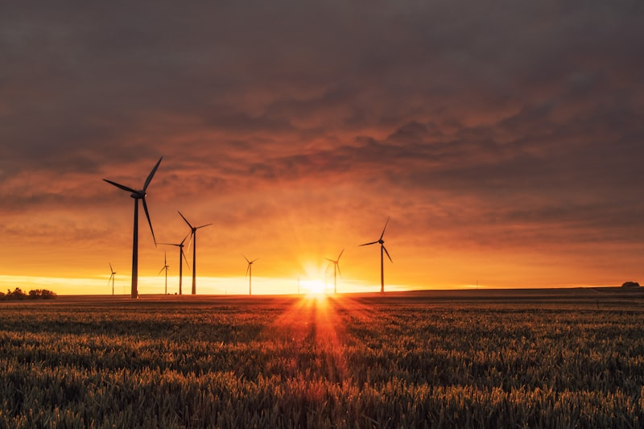

Unimos a visão estratégica de alto nível à execução implacável no terreno. Desenhamos o futuro do seu negócio, garantindo um legado de responsabilidade, conformidade e liderança ambiental.
A Nossa Abordagem
Uma perspetiva holística que cobre todo o espectro da sustentabilidade corporativa.
Realizamos um diagnóstico completo de maturidade ESG, identificando lacunas e elaborando um plano estratégico de sustentabilidade rigoroso, perfeitamente alinhado com os objetivos de longo prazo do seu negócio e as exigências regulatórias globais.
Desenvolvimento de roteiros de descarbonização de curto, médio e longo prazo. Identificamos projetos prioritários e desenhamos a arquitetura financeira necessária para a sua execução, alavancando fundos como o PRR e PT2030.

Transpomos a teoria para a prática. Projetamos e implementamos a infraestrutura de carregamento de veículos elétricos (VE) para frotas empresariais e espaços públicos, integrando gestão inteligente e fontes renováveis locais.
Como Trabalhamos
4 fases para transformar o seu negócio num líder de sustentabilidade, do diagnóstico ao relatório de prestígio.
Avaliação profunda do estado atual da organização face a critérios ambientais, sociais e de governance, mapeando riscos sistémicos e oportunidades de inovação.
Elaboração de um plano de ação tático com metas quantificáveis, iniciativas prioritárias e arquitetura financeira detalhada para viabilizar a transição.
Execução rigorosa das iniciativas aprovadas — da construção de parques solares à reestruturação de frotas e integração de sistemas de monitorização.
Produção de relatórios de sustentabilidade auditáveis e conformes (CSRD, GRI), consolidando a reputação da marca junto de investidores de topo.
Inicie a sua jornada com um diagnóstico inicial de alto nível. Discreto, profundo e transformador. A conformidade CSRD é obrigatória — nós tornamo-la numa vantagem competitiva.